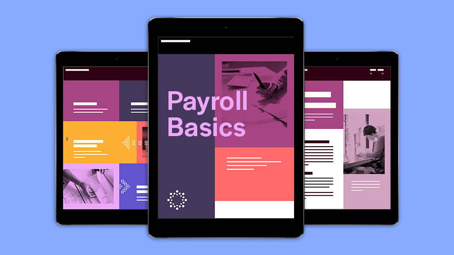

Digital design quick start
Whether you’re designing an e-book or an interactive brochure, following these digital design principles will make for a better experience for your users.
When starting a digital design project, it’s essential to understand where people will view it and the constraints that come with different devices.
- Do design for the intended screen size, or “form factor.” The New Document dialog in InDesign has Web and Mobile presets, and lets you search Adobe Stock templates to use as a starting point.
- Do plan how to optimize interactions for the intended device.
- Don’t think in terms of print. Digital design uses pixels, not picas or inches, to measure dimensions, and RGB (Red, Green, and Blue), not CMYK (Cyan, Magenta, Yellow, and Black), for color.
Content hierarchy
Decide which elements are most important to create a streamlined and effective design.
- Do create a focal point. On an event flyer, for example, you want to draw people’s attention to essential information like date, location, and time.
- Do repeat key design elements to create a visual language. You can store and share assets you reuse with Creative Cloud Libraries.
- Do use InDesign features like Adobe Fonts, font size, and color to visually convey the relative importance of different components in your design.
- Do save formatting for elements like heading and body type as paragraph styles. This helps with consistency and makes visual pairing easier.